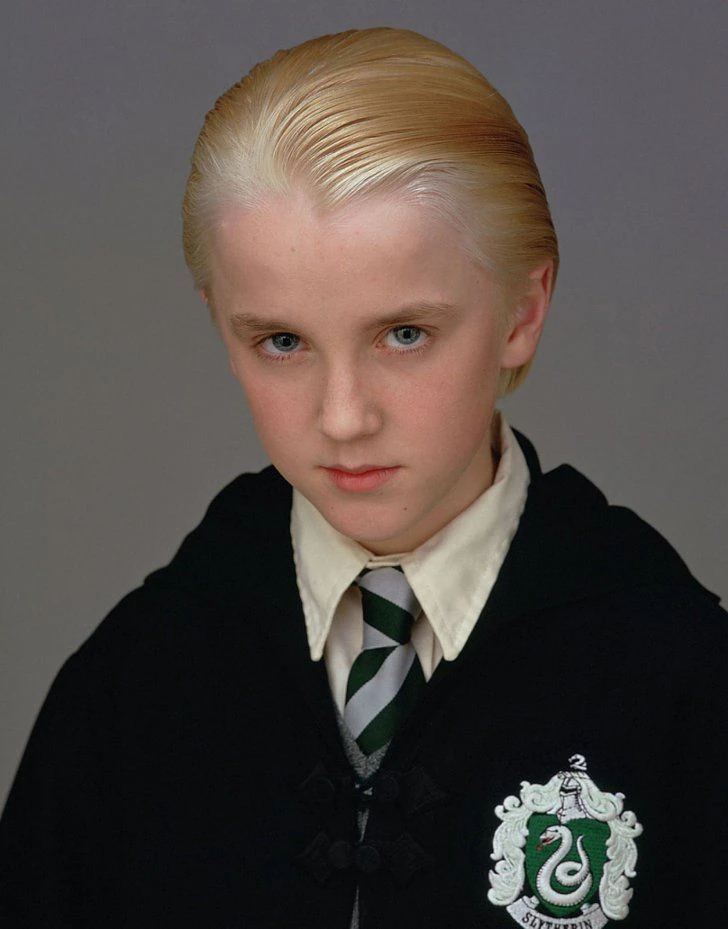
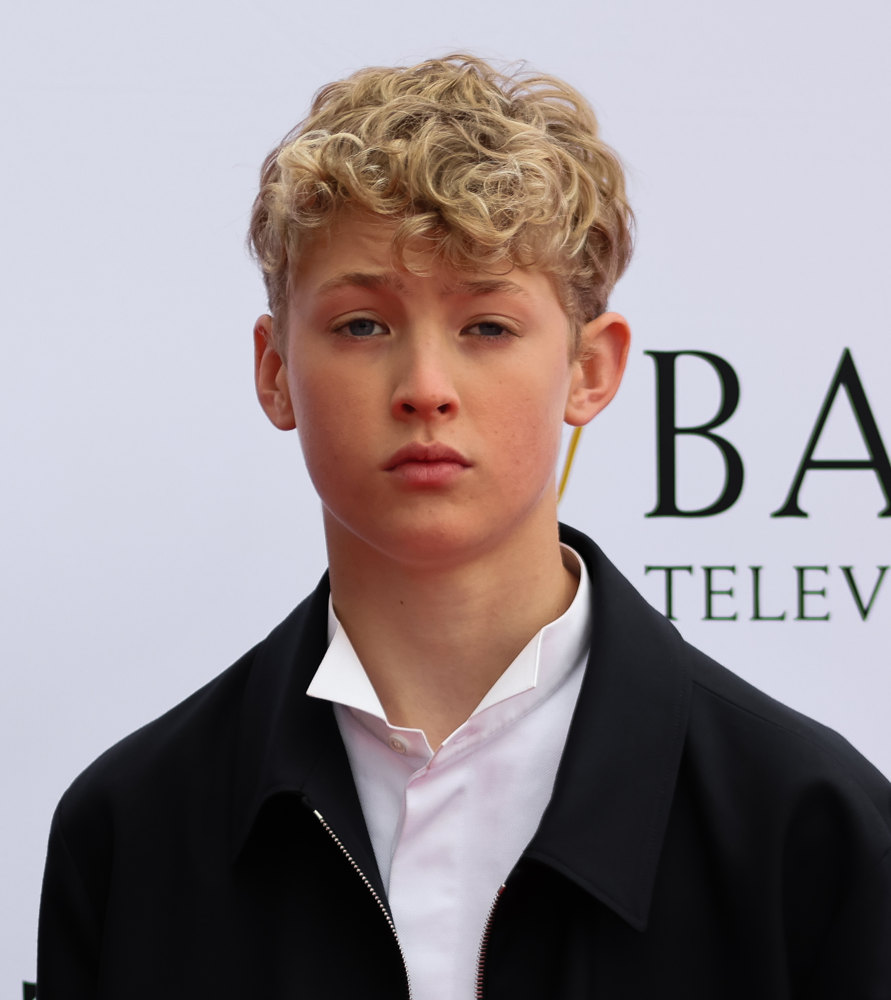

Adaptacja filmowa

Tom Felton wcielił się w Draco Malfoya z niezwykłą charyzmą i wyczuciem, tworząc postać podręcznikowego, aroganckiego szkolnego rywala o charakterystycznym, drwiącym uśmiechu. Z biegiem serii i wraz z dorastaniem bohatera genialnie ukazał tragiczną przemianę Malfoya z pezrozumiałego łobuza w przerażonego, uwikłanego w mroczne konflikty chłopca.
Adaptacja serialowa

W nowej adaptacji telewizyjnej rolę Draco przejmuje młody brytyjski aktor Lox Pratt. Dłuższa formuła serialu pozwala na znacznie dokładniejsze zbadanie przeszłości i motywacji Malfoya, co daje Prattowi okazję do ukazania pęknięć w postawie bohatera i pokazania, jak pod silną presją ze strony ojca jego pewność siebie ustępuje miejsca wewnętrznemu zagubieniu.